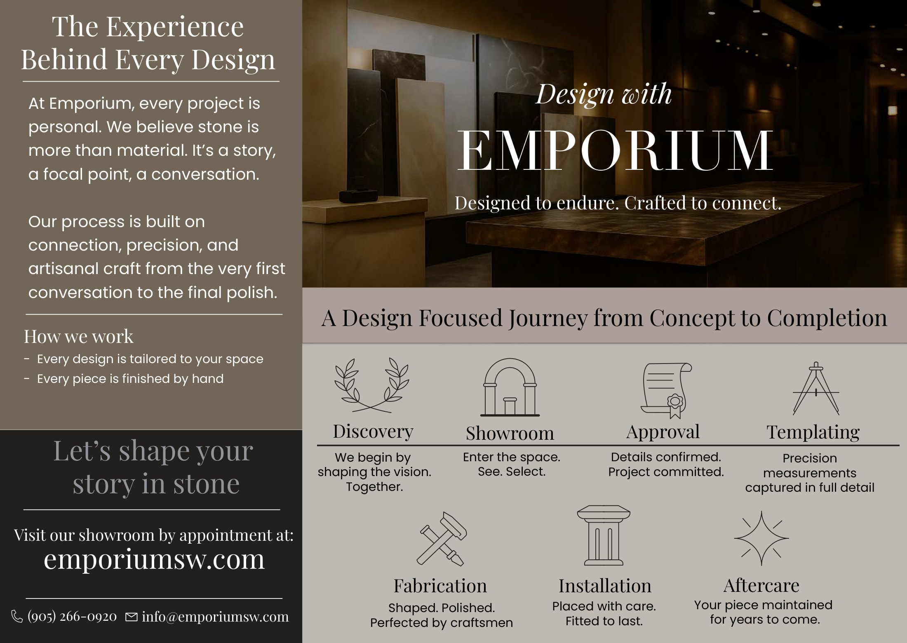
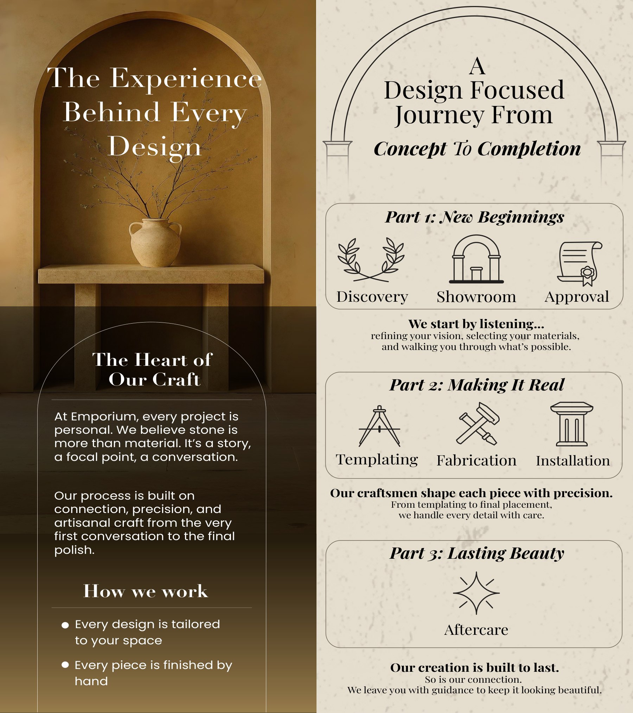
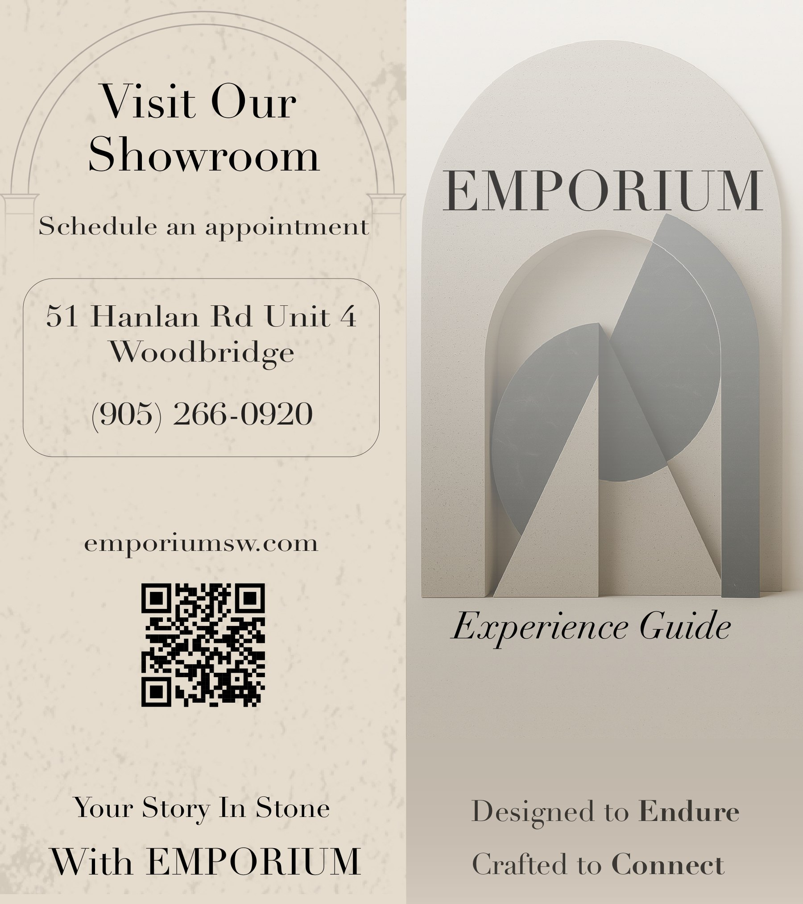
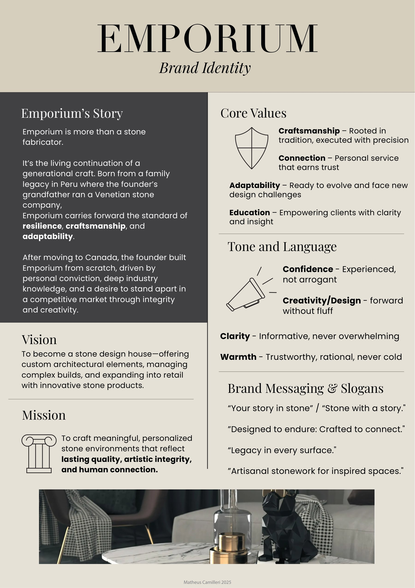

Client work
Emporium
Turning a word-of-mouth family stone fabricator into a boutique that a younger audience can find, and wants to be part of.




The client journey
The client journey in five steps: choose the stone with guidance, design the piece together, have it crafted by hand, live with it at home, and stay connected to Emporium afterwards.
The client
Emporium is a family business that has been cutting stone for a long time, in Woodbridge, my hometown. Its work came almost entirely from word of mouth and referrals.
They wanted two things: to be seen as a boutique, not a fabricator, and to reach a younger audience through social media and the internet, where they barely existed.
I found the job through a junior designer posting on Humber's student job board. It turned into strategy.
The problem
A fabricator sells a slab. A boutique sells an experience. Emporium's craftsmanship was already there; nothing about how they presented themselves said so, and nothing online gave a younger client a reason to choose them.
The idea: a client journey, not a product
The most valuable thing I made was a customer journey map, which became the Client Experience Guide. It walks a new client through working with Emporium: choosing their stone, being part of the design process, and ending up with a piece of artisan craftsmanship in their home.
The point was that you don't buy a countertop from Emporium. You join a boutique: an experience, and a relationship that lasts past the install.
What I made
- Positioning and narrative: from fabricator to boutique design studio
- A brand identity: story, values, tone of voice and the line "Designed to endure. Crafted to connect."
- The Client Experience Guide, a customer journey map (pictured above)
- New brand materials: posters and banners
- An event identity
- Direction for the online experience
What happened
It was paid work, and I delivered it. It never launched: our working relationship ended, and they didn't go on to use the materials. So there are no results to report. What's here is the strategy and the creative, and the thinking I'd bring to the next business that wants to be more than its product.